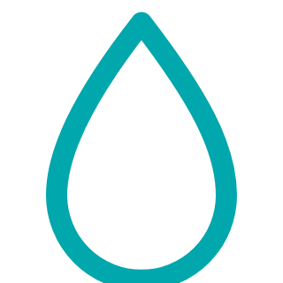
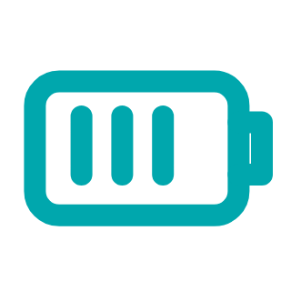
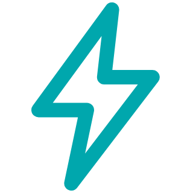
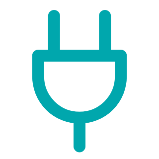
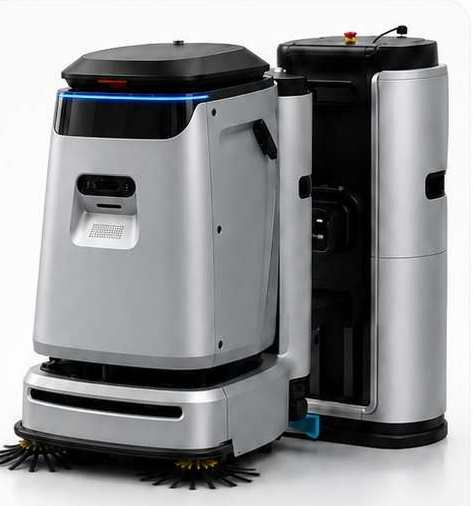
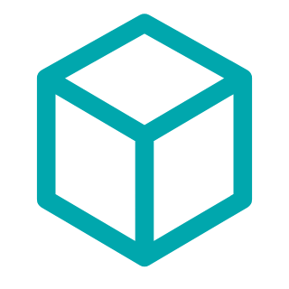
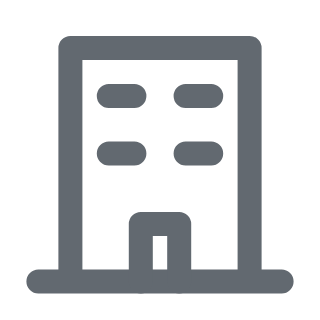
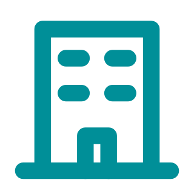
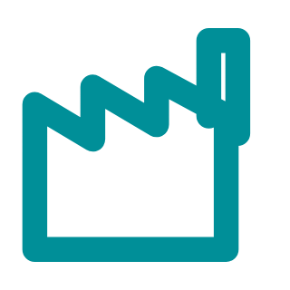
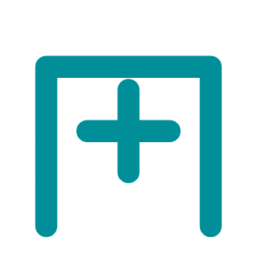

TECHNISCHE DATEN
Kompakt gebaut. Für große Aufgaben.
Leistungsdaten, Abmessungen und typische Einsatzbereiche des C5 im Überblick.
C5 · PRODUKTPARAMETER

90 LGroßer Wassertank
24 V / 80 AhBatterie170 kgGesamtgewicht

1.800 WMax. Leistung
200–240 VNenneingangsspannung8 LTankvolumen Arbeitsstation
Frischwasser 7–10 L/min · Ablass 10–15 L/min


680 × 820 × 1.085 mmArbeitsstation: 520 × 310 × 1.105 mm

EINSATZSZENARIEN
Große Supermärkte

BürogebäudeVerkehrsknoten

FabrikenGewerbekomplexe

Krankenhäuser